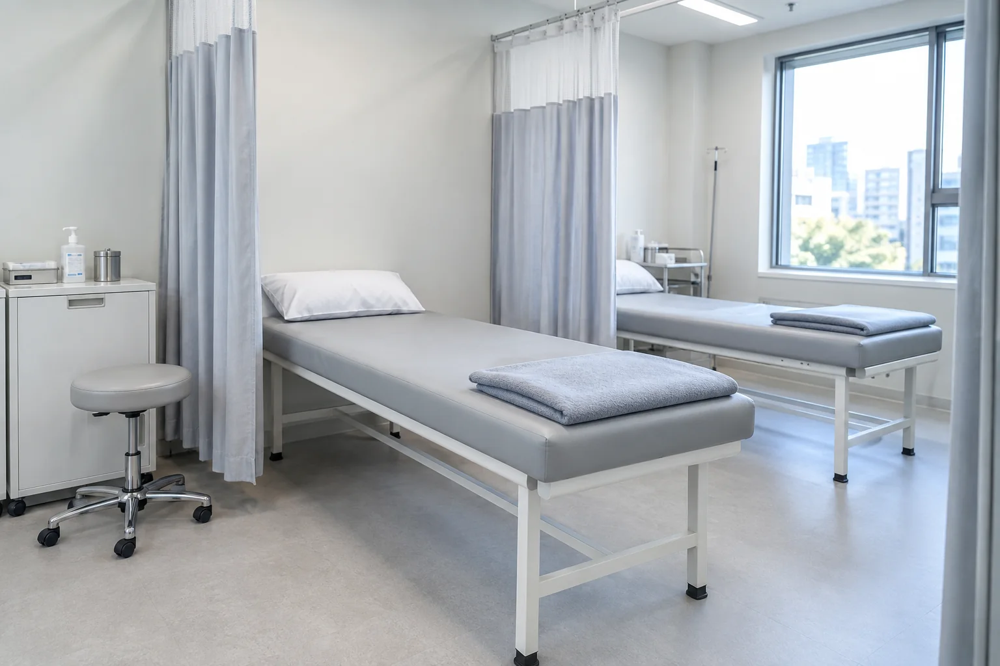

BALANCE CARE
균형을 되찾는 자율신경 주사치료
원인 모를 통증과 만성 피로, 무너진 신체 밸런스까지 몸 전체를 함께 보고 바로잡습니다.
자율신경계는 교감신경과 부교감신경의 균형을 통해 혈류, 호흡, 면역 및 신체 조절을 담당합니다. 척추와 근육의 지속적인 압박이나 만성 스트레스로 인해 자율신경 균형이 무너지면 검사상 특별한 이상이 없어도 원인 모를 통증, 두통, 어지럼증, 불면, 만성 피로 등 다양한 신체 불균형 증상이 나타납니다.

POINT 3
기통찬 자율신경치료의 핵심 포인트
몸 전체의 흐름을 함께 보는 통합 진단
국소적인 통증 부위만 보지 않고, 척추·신경·근육의 연관성을 살펴 신체 전체의 신경계 흐름과 밸런스를 바로잡습니다.
자극받은 신경을 안정시키는 비수술 맞춤 치료
자율신경절 주변의 뭉친 근육을 풀어주고 부종과 염증을 완화하여 예민해진 신경 자극을 과도한 약물 없이 안전하게 완화합니다.
만성 통증과 원인 모를 전신 증상 동시 개선
원인을 알 수 없었던 만성 통증은 물론, 두통·불면·어지럼증 등 자율신경 불균형으로 유발되는 복합 증상을 함께 케어합니다.
WHAT MAKES IT DIFFERENT
여의도기통찬의 특별함
원인 모를 증상도 가볍게 넘기지 않는 집요함
"원인이 잘 안 보인다"는 이유로 방치되기 쉬운 자율신경계 이상 증상도 경청하며, 미세한 신경 자극 지점을 기똥차게 탐구하여 치료합니다.
의사를 가르치는 풍부한 임상 경험 보유
통증·신경 치료 분야의 깊이 있는 연구와 교육 활동을 통해 축적된 노하우로, 신경계의 이상 흐름을 섬세하게 바로잡는 정밀 비수술 케어를 제공합니다.
INDICATION
주요 적용 질환
질환별 특성과 치료가 필요한 부위를 사진과 함께 살펴보세요.